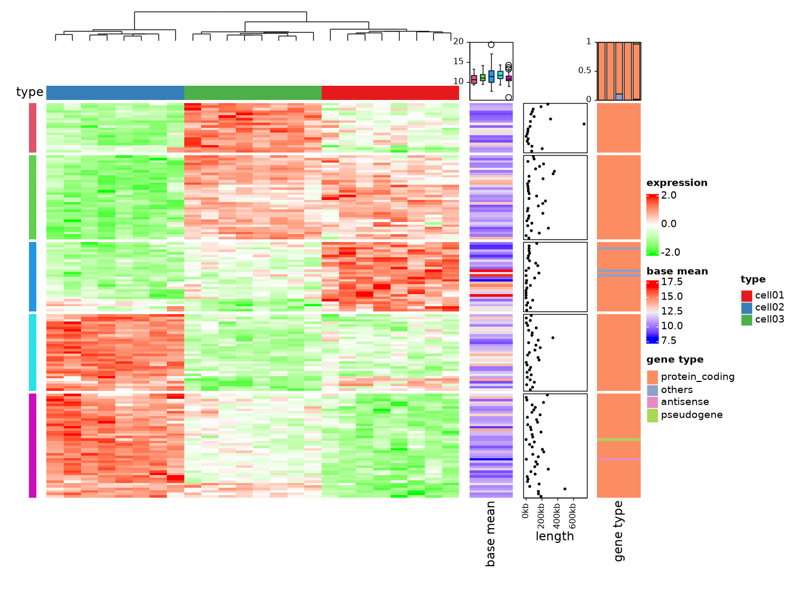
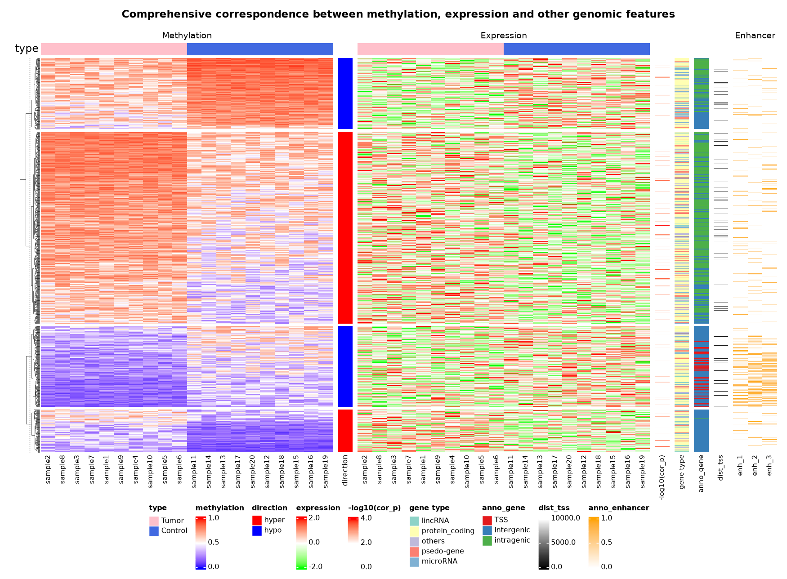
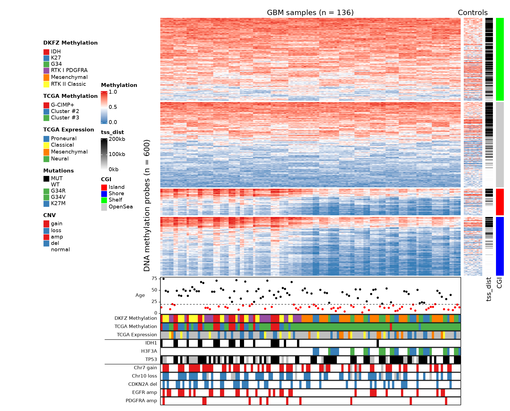
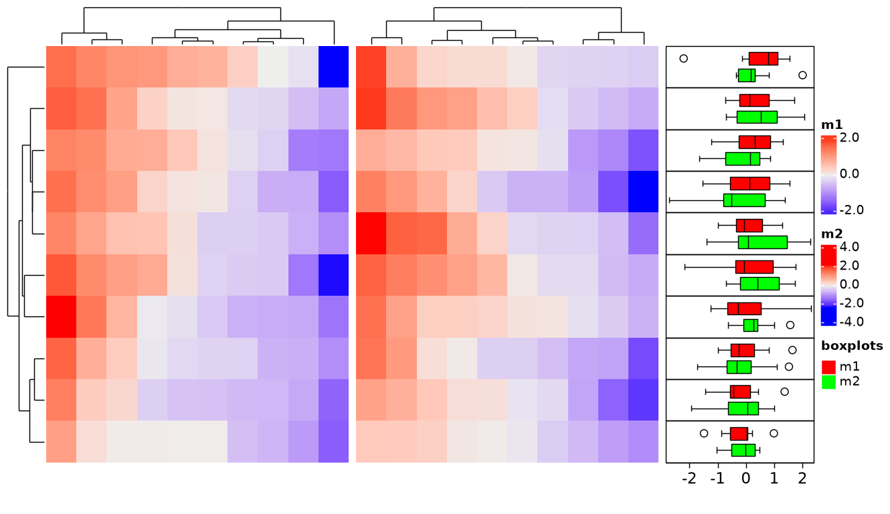

14 More Examples#
This chapter walks through six complete multi-omics and biological
visualization case studies ported to ComplexHeatmap-py.
14.1 Add more information for gene expression matrix#
Gene expression heatmaps typically display z-score normalized
relative expression across samples. Adding side-by-side absolute
expression (base mean), gene length
(anno_points), gene biotype (gene type),
cluster summary plots (anno_summary()), and k-means cluster
indicator strips (anno_block()) puts all gene-level context
into one aligned figure:
import re
import numpy as np
import complexheatmap as ch
expr = ch.load_dataset("gene_expression")
cell_cols = [c for c in expr.columns if "cell" in c]
mat = expr[cell_cols].to_numpy(dtype=float)
base_mean = mat.mean(axis=1)
mat_scaled = ((mat.T - mat.mean(axis=1)) / mat.std(axis=1, ddof=1)).T
sample_type = [re.sub(r"s\d+_", "", c) for c in cell_cols]
ha = ch.HeatmapAnnotation(
type=sample_type,
col={"type": {"cell01": "#E41A1C", "cell02": "#377EB8", "cell03": "#4DAF4A"}},
annotation_name_side="left",
)
ht_list = (
ch.rowAnnotation(
block=ch.anno_block(gp=ch.gpar(fill=[2, 3, 4, 5, 6], col=None)),
width=ch.unit(2.5, "mm"),
show_annotation_name=False,
)
+ ch.Heatmap(
mat_scaled,
name="expression",
row_km=5,
col=ch.colorRamp2([-2, 0, 2], ["green", "white", "red"]),
top_annotation=ha,
show_column_names=False,
row_title=None,
show_row_dend=False,
)
+ ch.Heatmap(
base_mean,
name="base mean",
top_annotation=ch.HeatmapAnnotation(
summary=ch.anno_summary(gp=ch.gpar(fill=[2, 3, 4, 5, 6]), height=ch.unit(2, "cm")),
show_annotation_name=False,
),
width=ch.unit(15, "mm"),
)
+ ch.rowAnnotation(
length=ch.anno_points(
expr["length"].to_numpy(dtype=float),
pch=16,
size=ch.unit(1, "mm"),
axis_param={"at": [0, 2e5, 4e5, 6e5], "labels": ["0kb", "200kb", "400kb", "600kb"]},
width=ch.unit(2.2, "cm"),
)
)
+ ch.Heatmap(
expr["type"].to_numpy(),
name="gene type",
col={"protein_coding": "#FC8D62", "others": "#8DA0CB", "antisense": "#E78AC3", "pseudogene": "#A6D854"},
top_annotation=ch.HeatmapAnnotation(
summary=ch.anno_summary(height=ch.unit(2, "cm")),
show_annotation_name=False,
),
width=ch.unit(15, "mm"),
)
)
ch.draw(ht_list, width=10.8, height=8.2, padding=ch.unit([12, 10, 4, 4], "mm"), ht_gap=ch.unit(3.5, "mm"))
14.2 The measles vaccine heatmap#
This classic visualization reproduces the US measles incidence
heatmap (1930–2001) using
ch.load_dataset("measles"), augmented with yearly and
per-state total barplots and a dashed vertical marker at 1961 via
decorate_heatmap_body():
mat = ch.load_dataset("measles")
arr = mat.to_numpy(dtype=float)
ha1 = ch.HeatmapAnnotation(
dist1=ch.anno_barplot(
arr.sum(axis=0),
bar_width=1.0,
gp=ch.gpar(col="white", fill="#FFE200"),
border=False,
axis_param={"at": [0, 2e5, 4e5, 6e5, 8e5], "labels": ["0", "200k", "400k", "600k", "800k"]},
height=ch.unit(2, "cm"),
),
show_annotation_name=False,
)
ha2 = ch.rowAnnotation(
dist2=ch.anno_barplot(
arr.sum(axis=1),
bar_width=1.0,
gp=ch.gpar(col="white", fill="#FFE200"),
border=False,
axis_param={"at": [0, 5e5, 1e6, 1.5e6], "labels": ["0", "500k", "1m", "1.5m"]},
width=ch.unit(2, "cm"),
),
show_annotation_name=False,
)
year_text = [str(c) if int(c) % 10 == 0 else "" for c in mat.columns]
ha_column = ch.HeatmapAnnotation(
year=ch.anno_text(year_text, rot=0, location=ch.unit(1, "npc"), just="top", gp=ch.gpar(fontsize=9)),
show_annotation_name=False,
)
col_fun = ch.colorRamp2([0, 800, 1000, 127000], ["white", "cornflowerblue", "yellow", "red"])
ht_list = (
ch.Heatmap(
mat,
name="cases",
col=col_fun,
cluster_columns=False,
show_row_dend=False,
rect_gp=ch.gpar(col="white", lwd=0.3),
show_column_names=False,
row_names_side="left",
row_names_gp=ch.gpar(fontsize=7.5),
column_title="Measles cases in US states 1930-2001\nVaccine introduced 1961",
top_annotation=ha1,
bottom_annotation=ha_column,
heatmap_legend_param={"at": [0, 5e4, 1e5, 1.5e5], "labels": ["0", "50k", "100k", "150k"]},
)
+ ha2
)
ch.draw(ht_list, width=11.0, height=9.4, ht_gap=ch.unit(3, "mm"), padding=ch.unit([4, 4, 6, 4], "mm"))
cols_str = [str(c) for c in mat.columns]
x_pos = (cols_str.index("1961") + 0.5) / len(cols_str)
with ch.decorate_heatmap_body("cases"):
ch.grid_lines([x_pos, x_pos], [0.0, 1.0], gp=ch.gpar(lwd=2, lty="dashed", col="#111111"))
ch.grid_text(
"Vaccine introduced (1961)",
x=ch.unit(x_pos + 0.015, "npc"),
y=ch.unit(1, "npc") + ch.unit(12, "mm"),
just="left",
gp=ch.gpar(fontsize=9.5, fontface="bold"),
)
14.3 Visualize cell heterogeneity from single-cell RNA-seq#
In this example, mouse T-cell single-cell RNA-seq data
(data/mouse_scRNAseq_sample.csv) is filtered for genes
expressed in over 50% of cells and correlated with at least 20 other
signature genes (|Spearman rho| >= 0.5). Each gene is
quantile-clamped (10%–90%) before z-scoring so
outliers do not dominate the color scale.
We align the scaled expression matrix (scaled_expr),
mean expression (base_expr), ribonucleoprotein membership
(data/mouse_ribonucleoprotein_genes.txt), cell-cycle
membership (data/mouse_cell_cycle_genes.txt),
anno_mark() gene labels, and the pairwise gene-gene
correlation matrix (cor). Setting
main_heatmap="cor" clusters all tracks according to the
gene-gene correlation hierarchy, and decorate_column_dend()
highlights the two primary cell subpopulations with translucent
rectangles:
from pathlib import Path
import pandas as pd
from scipy.stats import spearmanr
expr = pd.read_csv("data/mouse_scRNAseq_sample.csv", index_col=0)
expr = expr[(expr > 0).mean(axis=1) > 0.5]
def get_correlated_variable_genes(df: pd.DataFrame, cor_cutoff: float = 0.5, n_cutoff: int = 20) -> pd.DataFrame:
arr = df.to_numpy(dtype=float)
scores = []
for i in range(arr.shape[0]):
x = arr[i]
q10, q90 = np.quantile(x, [0.1, 0.9])
sub = x[(x > q10) & (x < q90)]
scores.append(float(np.var(sub, ddof=1) / np.mean(sub)) if len(sub) > 1 and np.mean(sub) > 0 else 0.0)
mat_ord = df.iloc[np.argsort(scores)[::-1]]
corr, _ = spearmanr(mat_ord.to_numpy(dtype=float), axis=1)
np.fill_diagonal(corr, 0.0)
return mat_ord.iloc[np.sum(np.abs(corr) >= cor_cutoff, axis=0) > n_cutoff]
mat = get_correlated_variable_genes(expr, cor_cutoff=0.5, n_cutoff=20)
mat_arr = mat.to_numpy(dtype=float)
mat2 = np.empty_like(mat_arr)
for i in range(mat_arr.shape[0]):
x = np.clip(mat_arr[i], *np.quantile(mat_arr[i], [0.1, 0.9]))
sd = np.std(x, ddof=1)
mat2[i] = (x - np.mean(x)) / sd if sd > 0 else 0.0
mat2_df = pd.DataFrame(mat2, index=mat.index, columns=mat.columns)
cc = set(Path("data/mouse_cell_cycle_genes.txt").read_text().splitlines())
rp = set(Path("data/mouse_ribonucleoprotein_genes.txt").read_text().splitlines())
ccl = np.array([g in cc for g in mat.index])
rpl = np.array([g in rp for g in mat.index])
base_mean = mat_arr.mean(axis=1)
mark_idx = np.where(ccl & (base_mean > np.quantile(base_mean, 0.25)))[0].tolist()
mark_labels = [str(mat.index[i]) for i in mark_idx]
cor_mat = np.corrcoef(mat2)
ht_list = (
ch.Heatmap(
mat2_df,
col=ch.colorRamp2([-1.5, 0, 1.5], ["blue", "white", "red"]),
name="scaled_expr",
column_title=f"relative expression for {mat.shape[0]} genes",
show_column_names=False,
show_row_names=False,
width=ch.unit(8, "cm"),
heatmap_legend_param={"title": "Scaled expr"},
)
+ ch.Heatmap(base_mean, name="base_expr", width=ch.unit(5, "mm"), heatmap_legend_param={"title": "Base expr"})
+ ch.Heatmap(rpl.astype(int), name="ribonucleoprotein", col={"0": "white", "1": "purple"}, show_heatmap_legend=False, width=ch.unit(5, "mm"))
+ ch.Heatmap(ccl.astype(int), name="cell_cycle", col={"0": "white", "1": "red"}, show_heatmap_legend=False, width=ch.unit(5, "mm"))
+ ch.rowAnnotation(link=ch.anno_mark(at=mark_idx, labels=mark_labels, labels_gp=ch.gpar(fontsize=9.5), padding=ch.unit(1, "mm")))
+ ch.Heatmap(
cor_mat,
name="cor",
col=ch.colorRamp2([-1, 0, 1], ["green", "white", "red"]),
show_row_names=False,
show_column_names=False,
row_dend_side="right",
show_column_dend=False,
column_title="pairwise correlation between genes",
heatmap_legend_param={"title": "Correlation"},
)
)
ht_drawn = ch.draw(ht_list, width=12.5, height=8.0, main_heatmap="cor")
tree = ch.column_dend(ht_drawn, name="scaled_expr")
ind = ch.cutree(tree, k=2)[ch.order_dendrogram(tree)]
n_cells = len(ind)
with ch.decorate_column_dend("scaled_expr"):
for grp, fill_col in zip((1, 2), ("#FF000040", "#00FF0040")):
a = float(np.where(ind == grp)[0][0])
b = float(np.where(ind == grp)[0][-1] + 1)
ch.grid_rect(x=ch.unit(a / n_cells, "npc"), width=ch.unit((b - a) / n_cells, "npc"), just="left", gp=ch.gpar(fill=fill_col, col=None))
14.4 Correlations between methylation, expression and other genomic features#
Using the bundled "meth" dataset (1,000 DMRs negatively
correlated with nearest-gene expression across 10 tumor and 10 control
samples), we synchronize column ordering across methylation and
expression via column_order, split rows simultaneously by
row_km=2 and row_split=direction, and merge
all legends at the bottom:
ds = ch.load_dataset("meth")
mat_meth = ds["meth"].reset_index().to_numpy(dtype=float)
mat_expr = ds["expr"].reset_index().to_numpy(dtype=float)
anno_enhancer = ds["enhancer"].to_numpy(dtype=float)
rm = ds["row_meta"].reset_index()
direction = rm["direction"].tolist()
cor_pvalue = rm["cor_pvalue"].to_numpy(dtype=float)
gene_type = rm["gene_type"].tolist()
anno_gene = rm["anno"].tolist()
dist = rm["dist"].to_numpy(dtype=float)
sample_type = ["Tumor"] * 10 + ["Control"] * 10
col_names = [f"sample{i}" for i in range(1, 21)]
col_order = ch.hclust(ch.dist(mat_meth.T)).order
gt_levels = list(dict.fromkeys(gene_type))
ag_levels = list(dict.fromkeys(anno_gene))
with ch.ht_opt.local(
legend_title_gp=ch.gpar(fontsize=8, fontface="bold"),
legend_labels_gp=ch.gpar(fontsize=8),
heatmap_column_names_gp=ch.gpar(fontsize=7.5),
heatmap_column_title_gp=ch.gpar(fontsize=10),
heatmap_row_title_gp=ch.gpar(fontsize=8),
):
ha = ch.HeatmapAnnotation(type=sample_type, col={"type": {"Tumor": "pink", "Control": "royalblue"}}, annotation_name_side="left")
ha2 = ch.HeatmapAnnotation(type=sample_type, col={"type": {"Tumor": "pink", "Control": "royalblue"}}, show_legend=False, show_annotation_name=False)
ht_list = (
ch.Heatmap(pd.DataFrame(mat_meth, columns=col_names), name="methylation", col=ch.colorRamp2([0, 0.5, 1], ["blue", "white", "red"]),
column_order=col_order, top_annotation=ha, column_title="Methylation", show_row_names=False,
row_dend_width=ch.unit(8, "mm"), row_dend_gp=ch.gpar(lwd=0.4))
+ ch.Heatmap(direction, name="direction", col={"hyper": "red", "hypo": "blue"}, show_row_names=False)
+ ch.Heatmap(pd.DataFrame(mat_expr, columns=col_names), name="expression", col=ch.colorRamp2([-2, 0, 2], ["green", "white", "red"]),
column_order=col_order, top_annotation=ha2, column_title="Expression", show_row_names=False)
+ ch.Heatmap(cor_pvalue, name="-log10(cor_p)", col=ch.colorRamp2([0, 2, 4], ["white", "white", "red"]), show_row_names=False)
+ ch.Heatmap(gene_type, name="gene type", col=dict(zip(gt_levels, ch.brewer_pal(len(gt_levels), "Set3"))), show_row_names=False)
+ ch.Heatmap(anno_gene, name="anno_gene", col=dict(zip(ag_levels, ch.brewer_pal(len(ag_levels), "Set1"))), show_row_names=False)
+ ch.Heatmap(dist, name="dist_tss", col=ch.colorRamp2([0, 10000], ["black", "white"]), show_row_names=False)
+ ch.Heatmap(pd.DataFrame(anno_enhancer, columns=["enh_1", "enh_2", "enh_3"]), name="anno_enhancer",
col=ch.colorRamp2([0, 1], ["white", "orange"]), cluster_columns=False, column_title="Enhancer", show_row_names=False)
)
ch.draw(
ht_list,
width=12.5,
height=9.2,
row_km=2,
row_split=direction,
column_title="Comprehensive correspondence between methylation, expression and other genomic features",
column_title_gp=ch.gpar(fontsize=12, fontface="bold"),
merge_legends=True,
heatmap_legend_side="bottom",
padding=ch.unit([4, 8, 4, 4], "mm"),
)
14.5 Visualize methylation profile with complex annotations#
This example reproduces the 12-track glioblastoma methylation
overview from Sturm et al. (2012) by combining clinical/molecular
metadata from data/450K_annotation.txt (136 DKFZ patients)
with probe methylation, TSS distances, and chromatin-context CGI
categories derived from
ch.load_dataset("random_meth_expr_data"). Post-draw
decorate_annotation() calls add custom right-aligned
labels, frame borders, the age = 20 dashed threshold line, and section
divider lines:
ann_full = pd.read_csv("data/450K_annotation.txt", sep="\t", index_col=0, keep_default_na=False)
pheno = ann_full.loc[[idx for idx in ann_full.index if str(idx).startswith("dkfz_")]].copy()
ds = ch.load_dataset("random_meth_expr_data")
base_meth = ds["mat_meth"].reset_index().to_numpy(dtype=float)
row_meta = ds["row_meta"].reset_index()
anno_states = ds["anno_states"]
n_probes = 600
m2 = base_meth[:n_probes, 10:20]
tss_dist = np.abs(row_meta["tss_dist"].to_numpy(dtype=float)[:n_probes])
st_arr = anno_states.iloc[:n_probes]
cgi2 = np.where(
st_arr["tss"].to_numpy() > 0.25, "Island",
np.where(st_arr["enhancer"].to_numpy() > 0.15, "Shore",
np.where(st_arr["repressive"].to_numpy() > 0.15, "Shelf", "OpenSea")),
)
# Align probe profiles with the 6 DKFZ clinical subtypes in 450K_annotation.txt
rng = np.random.default_rng(2026)
dkfz_sub = pheno.iloc[:, 0].str.replace("'", "", regex=False).tolist()
subtype_bias = {"IDH": 0.22, "K27": -0.18, "G34": -0.14, "RTK I PDGFRA": 0.04, "Mesenchymal": -0.05, "RTK II Classic": 0.09}
m1 = np.empty((n_probes, len(pheno)), dtype=float)
cgi_mask = np.isin(cgi2, ["Island", "Shore"])
for j, sub in enumerate(dkfz_sub):
col_src = base_meth[:n_probes, j % 10].copy()
col_src[cgi_mask] = np.clip(col_src[cgi_mask] + subtype_bias.get(sub, 0.0) + rng.normal(0, 0.04, cgi_mask.sum()), 0, 1)
col_src[~cgi_mask] = np.clip(col_src[~cgi_mask] + rng.normal(0, 0.05, (~cgi_mask).sum()), 0, 1)
m1[:, j] = col_src
def _clean_na(seq: pd.Series) -> list:
return [np.nan if str(v).strip() in ("", "NA", "nan") else str(v).strip() for v in seq]
age_vals = pd.to_numeric(pheno.iloc[:, 12], errors="coerce").fillna(40.0).to_numpy(dtype=float)
mutation_col = {"MUT": "black", "WT": "white", "G34R": "#4DAF4A", "G34V": "#4DAF4A", "K27M": "#377EB8"}
cnv_col = {"gain": "#E41A1C", "loss": "#377EB8", "amp": "#E41A1C", "del": "#377EB8", "normal": "white"}
ha = ch.HeatmapAnnotation(
age=ch.anno_points(age_vals, gp=ch.gpar(col=["black" if a > 20 else "red" for a in age_vals]), size=ch.unit(1.4, "mm"), height=ch.unit(2.4, "cm")),
dkfz_cluster=dkfz_sub,
tcga_cluster=_clean_na(pheno.iloc[:, 1]),
tcga_expr=_clean_na(pheno.iloc[:, 2]),
IDH1=_clean_na(pheno.iloc[:, 4]),
H3F3A=_clean_na(pheno.iloc[:, 3]),
TP53=_clean_na(pheno.iloc[:, 5]),
chr7_gain=["gain" if str(v) == "1" else ("normal" if str(v) == "0" else np.nan) for v in pheno.iloc[:, 6]],
chr10_loss=["loss" if str(v) == "1" else ("normal" if str(v) == "0" else np.nan) for v in pheno.iloc[:, 7]],
CDKN2A_del=["del" if str(v) == "1" else ("normal" if str(v) == "0" else np.nan) for v in pheno.iloc[:, 8]],
EGFR_amp=["amp" if int(v) == 1 else "normal" for v in pheno.iloc[:, 9]],
PDGFRA_amp=["amp" if int(v) == 1 else "normal" for v in pheno.iloc[:, 10]],
col={
"dkfz_cluster": dict(zip(["IDH", "K27", "G34", "RTK I PDGFRA", "Mesenchymal", "RTK II Classic"], ch.brewer_pal(6, "Set1"))),
"tcga_cluster": dict(zip(["G-CIMP+", "Cluster #2", "Cluster #3"], ch.brewer_pal(3, "Set1"))),
"tcga_expr": {"Proneural": "#377EB8", "Classical": "#FFFF33", "Mesenchymal": "#FF7F00", "Neural": "#4DAF4A"},
"IDH1": mutation_col, "H3F3A": mutation_col, "TP53": mutation_col,
"chr7_gain": cnv_col, "chr10_loss": cnv_col, "CDKN2A_del": cnv_col, "EGFR_amp": cnv_col, "PDGFRA_amp": cnv_col,
},
na_col="grey", border=True,
show_legend=[True, True, True, False, True, False, True, False, False, False, False],
show_annotation_name=False,
annotation_legend_param={
"dkfz_cluster": {"title": "DKFZ Methylation"},
"tcga_cluster": {"title": "TCGA Methylation"},
"tcga_expr": {"title": "TCGA Expression"},
"H3F3A": {"title": "Mutations"},
"chr7_gain": {"title": "CNV"},
},
)
col_fun = ch.colorRamp2([0, 0.5, 1], ["#377EB8", "white", "#E41A1C"])
ht_list = (
ch.Heatmap(m1, col=col_fun, name="Methylation", clustering_distance_columns="spearman",
show_row_dend=False, show_column_dend=False, show_column_names=False, show_row_names=False,
bottom_annotation=ha, column_title=f"GBM samples (n = {m1.shape[1]})",
row_split=pd.Categorical(cgi2, categories=["Island", "Shore", "Shelf", "OpenSea"], ordered=True), row_title=None)
+ ch.Heatmap(m2, col=col_fun, name="Controls", show_column_names=False, show_column_dend=False,
column_title="Controls", show_heatmap_legend=False, width=ch.unit(1.2, "cm"))
+ ch.Heatmap(tss_dist, name="tss_dist", col=ch.colorRamp2([0, 2e5], ["white", "black"]), width=ch.unit(5, "mm"),
heatmap_legend_param={"at": [0, 1e5, 2e5], "labels": ["0kb", "100kb", "200kb"]})
+ ch.Heatmap(cgi2, name="CGI", show_row_names=False, width=ch.unit(5, "mm"),
col={"Island": "red", "Shore": "blue", "Shelf": "green", "OpenSea": "#CCCCCC"})
)
ch.draw(ht_list, width=13.0, height=10.5, row_title=f"DNA methylation probes (n = {m1.shape[0]})",
annotation_legend_side="left", heatmap_legend_side="left", padding=ch.unit([4, 28, 4, 4], "mm"))
14.6 Add multiple boxplots for single row#
While anno_boxplot() draws one boxplot per row, wrapping
grid_boxplot() inside an AnnotationFunction
lets you draw paired or grouped boxplots inside each row viewport for
direct visual comparison between two matrices:
rng = np.random.default_rng(123)
m1 = np.sort(rng.normal(size=(10, 10)), axis=1)
m2 = np.sort(rng.normal(size=(10, 10)), axis=1)[:, ::-1]
rg_lo = float(min(m1.min(), m2.min()))
rg_hi = float(max(m1.max(), m2.max()))
pad = (rg_hi - rg_lo) * 0.02
rg = (rg_lo - pad, rg_hi + pad)
def anno_multiple_boxplot(index, k=1, n=1):
nr = len(index)
ch.pushViewport(ch.Viewport(xscale=rg, yscale=(0.5, nr + 0.5), clip=False))
try:
for i, orig_i in enumerate(index):
y_pos = nr - i
ch.grid_rect(y=y_pos, height=1.0, default_units="native", gp=ch.gpar(fill="transparent", col="black"))
ch.grid_boxplot(m1[orig_i], pos=y_pos + 0.2, box_width=0.3, gp=ch.gpar(fill="red"), direction="horizontal")
ch.grid_boxplot(m2[orig_i], pos=y_pos - 0.2, box_width=0.3, gp=ch.gpar(fill="green"), direction="horizontal")
ch.grid_xaxis()
finally:
ch.popViewport()
anno_bp = ch.AnnotationFunction(
fun=anno_multiple_boxplot, which="row", n=10, subsettable=True, width=ch.unit(4, "cm"), show_name=False
)
ht_list = ch.Heatmap(m1, name="m1") + ch.Heatmap(m2, name="m2") + ch.rowAnnotation(boxplot=anno_bp, show_annotation_name=False)
lgd = ch.Legend(labels=["m1", "m2"], title="boxplots", legend_gp=ch.gpar(fill=["red", "green"]))
ch.draw(ht_list, padding=ch.unit([14, 2, 2, 2], "mm"), heatmap_legend_list=[lgd])